Dissipation of Turbulence
Learning Objectives
- Explain why there isn’t more and more turbulence in the atmosphere if there’s a continual supply of kinetic / thermal energy.
- Describe if there are limits to the scales of turbulent eddies in a system.
- Understand how we graph the size and duration of eddies.
Turbulence Generation (iClicker)
This type of turbulence is likely to occur on a calm sunny day with minimal winds:
- A: Thermally induced turbulence
- B: Mechanically induced turbulence
- C: Both of the above types are equally likely
- D: Neither, turbulence cannot occur without kinetic energy from wind to initiate it
Scales of Eddies on Earth
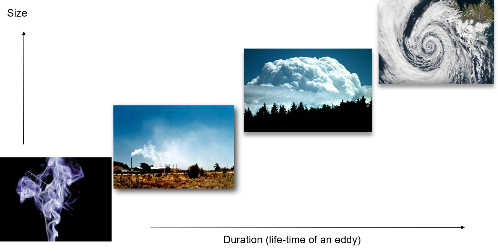Energy Cascade Theory
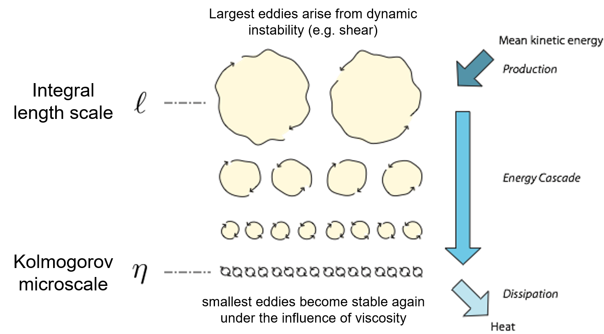Breakdown continues all the way down the inertial subrange to the molecular scale where eddies dissipate into heat. This is called the energy cascade.
Integral length scales
The integral length scale \(l\) of a turbulent flow depends on the processes that create it; \(l\) is a measure of the largest eddy size in the flow.
For mechanical turbulence this is the size of the obstacle, but
Limit 1: height above ground
Limit 2: depth of the PBL
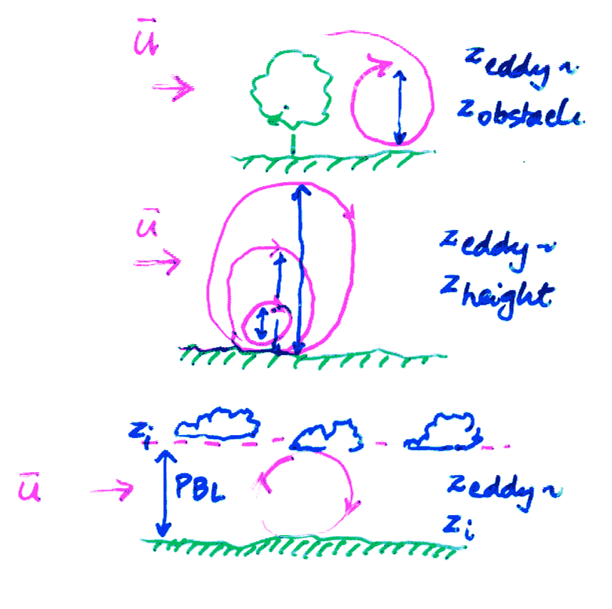
Kolmogorov Microscale
The Kolmogorov microscale (\(\eta\)) depends on the fluid’s viscosity \(\upsilon\), and the rate of energy dissipation to heat (\(\epsilon\)):
\[ \eta = \upsilon^{\small\frac{3}{4}}\epsilon^{\small\frac{-1}{4}} \]{eq-Kolmogorov-Microscale}
In steady-state turbulence as often encountered in the ABL, the rate at which the energy is dissipated is exactly equal to the rate at which energy is supplied (by thermal and mechanical convection).
Separating Scales - Fourier Transform
Scales of a turbulent flow are given by calculating a velocity spectrum:
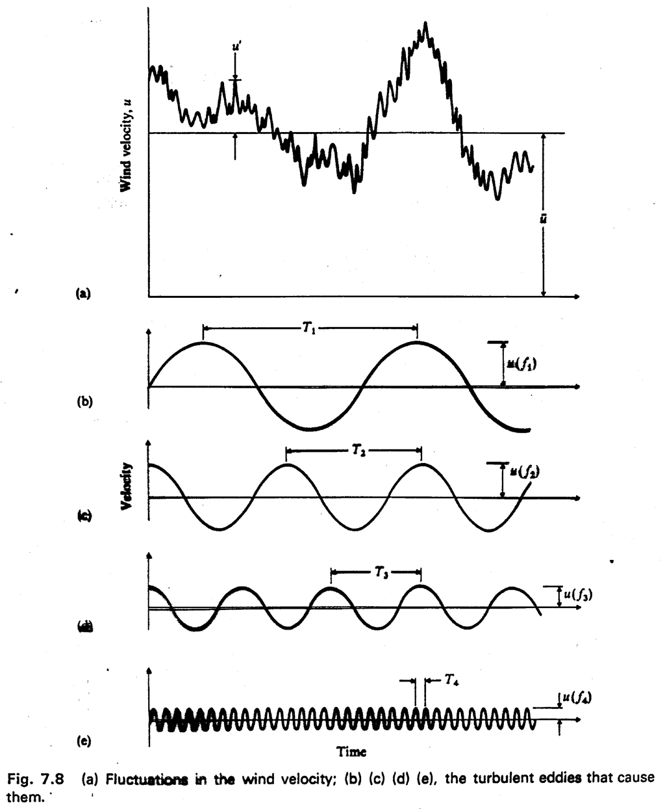
Spectra
Size of eddies can be viewed as wavelength (\(\lambda\)) or as frequency (\(v\)).
- A turbulence spectrum shows the energy as function of \(\lambda\) or \(v\), i.e. it sorts a time series by eddy duration.
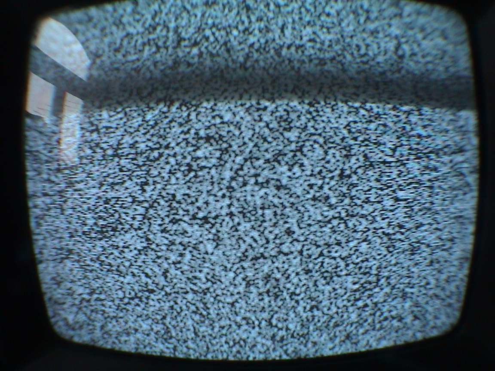
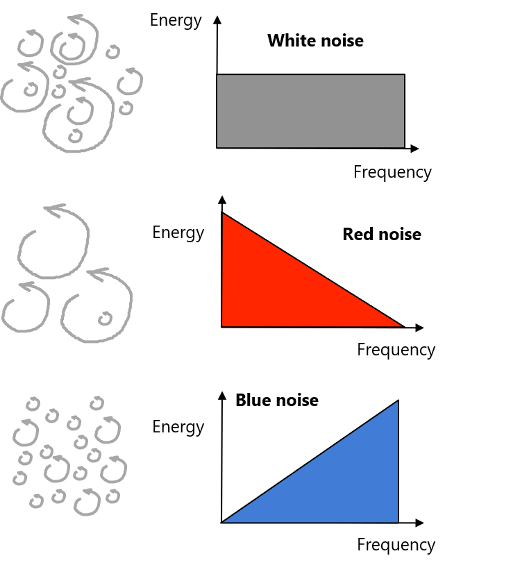
Phenomena vs. Frequency
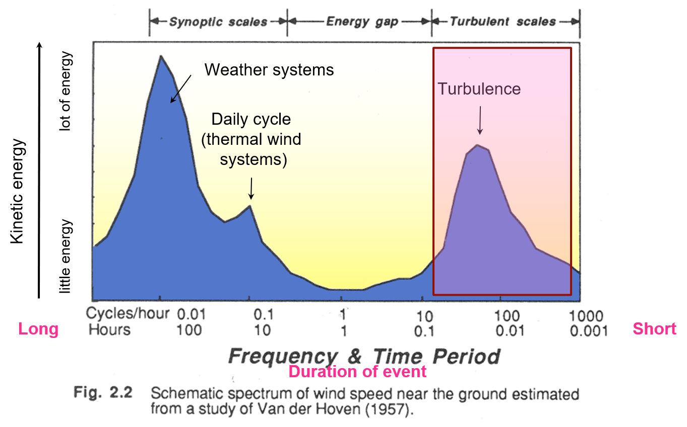A spectrum of atmospheric turbulence
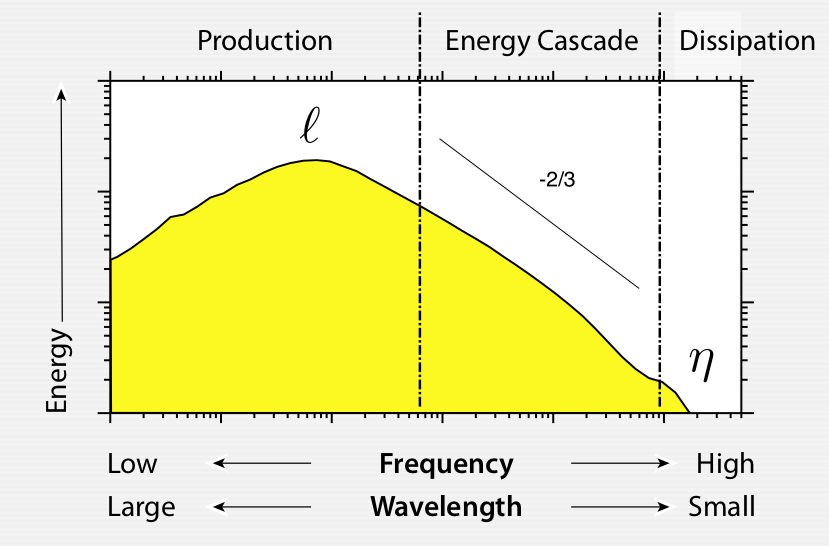Schematic set of spectra
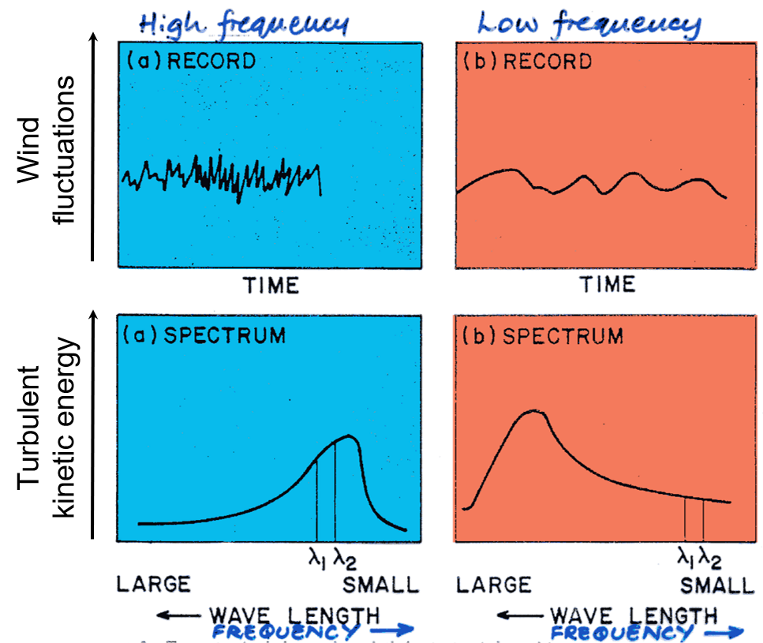
Influence of Height Above Ground
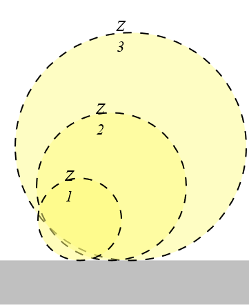
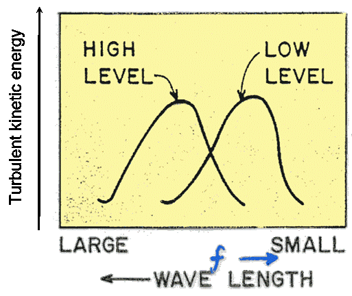
Influence of Stability (iClicker)
For a review of stability, see here
Thermal convection will always continue once induced under which type of atmospheric conditions:
- A: Stable
- B: Neutral
- C: Conditionally Unstable
- D: Unstable
Influence of Stability
Turbulent fluctuations are:
- High frequency (seconds) in stable and neutral ABL, when only mechanical convection is present
- Low frequency (minutes) in unstable air when thermal convection is dominant
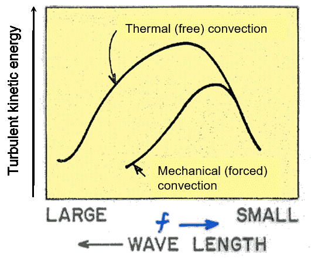
Directionality of turbulent motions
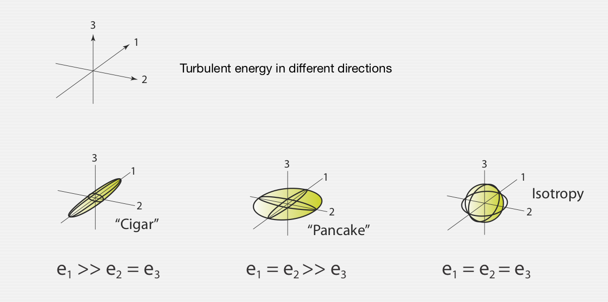Kolmogorov’s theory of local isotropy
Initial eddies, created at the length scale \(l\) are likely directional:
- After many break-downs into smaller ones they have the tendency to return to isotopy.
- Energy contained in one axis is transferred into other axes.
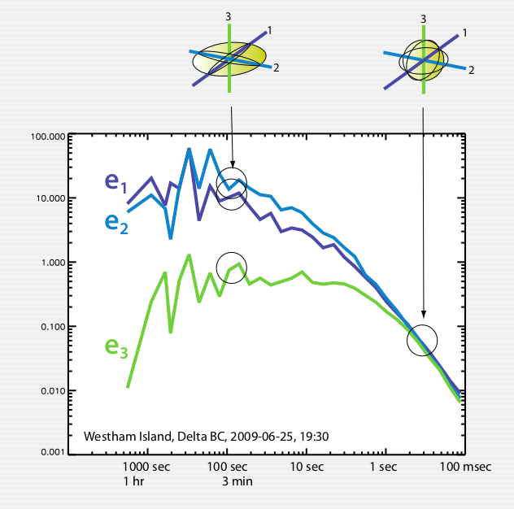
Turbulence spectra in plant canopies
In a fine structured canopy we observe a direct bypass from large eddies to small eddies without intermediate eddy sizes in the cascade.
- Large eddies are efficiently ‘cut’ into smaller ones by leaves, branches, stems - a process called wake and waving production.
- We call this process the spectral shortcut.
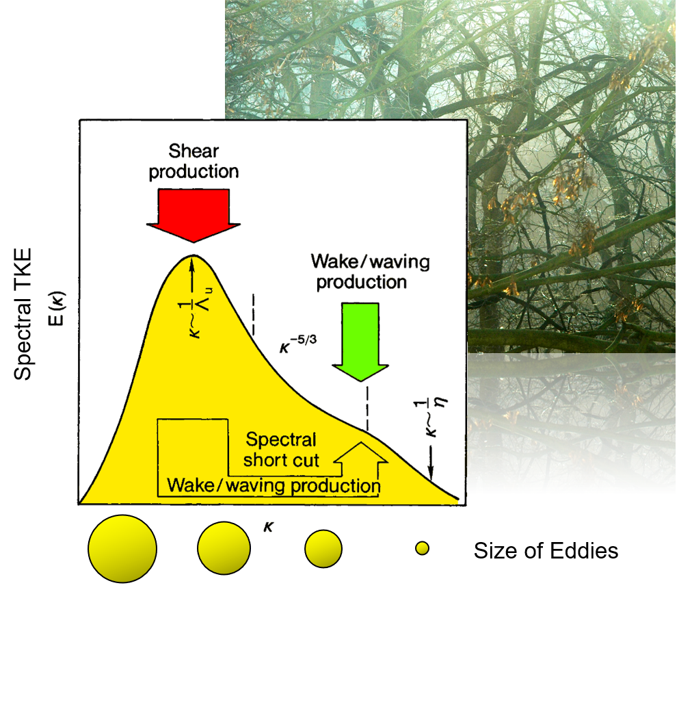
Spectral Shortcut of Turbulence in a Forest Canopy

Take Home Points
- Eddies produced mechanically and thermally at larger scales (integral length scale l) break into smaller and smaller ones creating a steady-state energy cascade of eddy sizes.
- The integral length scale l is controlled by the height above ground and turbulence production mechanisms.
- At small scales - the Kolmogorov microscale η - eddies become stable again and energy is eventually dissipated to heat.
- The size (duration) of eddies can be graphed using an energy spectrum. A spectrum sorts the energy contained in turbulence according to duration (or length) of eddies.
Midterm (iClicker)
Your midterm is:
- Wednesday March 13th
- Open Book
- Asynchronous (submitted on canvas)
- Not timed, but must be completed within 24 hours
- All of the above
Midterm Review
Part 1 Written answers (45%)
1 Problem Question: multi-part, involving calculations
Energy balance and heat conduction
2 Short answers questions
- Brief, but thorough responses
- Bullet point format fine where applicable
Part 2 Automated marking (55%)
- 2 calculation questions:
- Radiation budgets and geometry
- Partial credit offered for work (will require manual review, wont be adjusted immediately)
- 6 or 7 multiple choice
- 2 or 3 fill in the blank
- 1 matching question